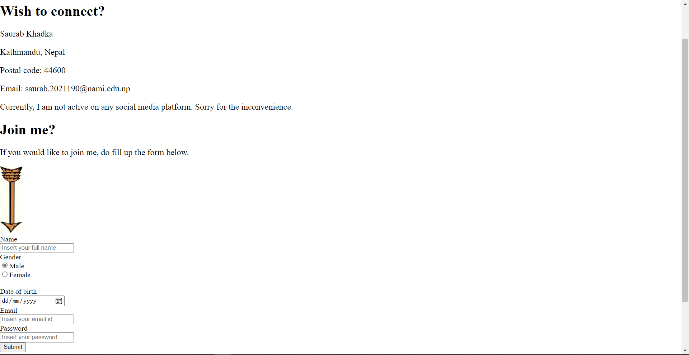

Kdk
I have learned coding before, and even now I am trying to do so from any free resource I come across. However, most of my learning has involved Back end programming which I love to unless something comes up that I just can't comprehend. Anyways, coding is my cup of tea. That said, web developing or web designing hasn't always been so kind to me. I had tried learning web designing during my high school year, but I just couldn't wrap my head around it. Perhaps because during school time it was a lot to take in or more plausibly I was not persistent enough. Nonetheless, my time in learning web developing and designing now say things otherwise.
Honestly, when we started with web developing, I was both excited and afraid given my history with it or more precisely with designing. One difference though, this time I was willing to learn and work. This time I tried to be meticulous in whatever we learned and what our tutor taught us. And I don't know this time it just clicked. Everything that I was confused about before or didn't understand started to look right. Certainly because this time I was adamant to learn rather than trying to deceive myself and it seems as if it is paying off, slowly but steadily. I have been practicing as much as I can, from college materials and even from external resources. Yet, I have to be honest I am no way near perfect but I am far better now than I was years ago when I merely understood things. I can talk about 'div' tag for instance. Something that I just couldn't get in my head, particularly when there were nested ones but something that I can work with now with convenience. Padding and margin sometimes can be a mess nevertheless are vital for design. I have failed inumerable times learning and working with these things, and that is how I eventually learned. Float, flex now seems a lot more intriguing. And I can say so with every property that I have learned but make no mistake by only failing first. Now with proper use of properties in CSS, I can create things myself. Working with html has never been this captivating. Debugging, however, is a headache as I have had to spend much of time just figuring out where I went wrong, and yet that comes as one of the most interesting part of this study. One new thing we learned in this module, Github, is really fascinating. I still have a lot to learn but it seems as we progress with the course, it will come as a blessing.
Hence, my experience of learning the basics of web development, coding, design and debugging process has been really helpful, illuminating and instructional. I have succeeded to learn and comprehend things that at a time I felt impossibly intricate. And I am willing to learn and grasp knowledge as much as I possibly can.
I used an overall grid layout in all the pages of the site, however, the layout is too simple as it only uses a column and rows which could have been done even without using the grid layout. The purpose, nevertheless, to use so is to have a consistent layout throughout the site and also make the contents structured. I though used grid layout again in the main division(a grid item) which we will know in the report. Moreover, I have used relative units such as %, rem, vh and so on in the pages so that it will be easy for responsive designs, but I also have used absolute unit(px) where required.
So, this is the first page of the site. The home page. Frankly, when designing my home page I did have a layout in my mind, but when it comes to implementation things don't always go as planned. So I came up with what I have now. The home and all the sites use consistent grid layout with the assist of display property.
Let's start with the header. The header contains a navigation bar which is made responsive for the mobile phone users which we will be discusssing later in the report, and it also consists of a name for the website. I would have loved it to be an icon there, but I don't have one, so I went with what I thought might look good. Float property was used to make the items in the bar float horizontally, and with some adjustments in padding and margin the contents in the header were made to look as seen in the site itself. With regard to the color and font that I decided to use in the header, it was based on what type of design would I have gone for the main(name for the division)division that followed subsequently. For instance nav used an image initially and later on only color so that it would complement the main div and page itself. Moreover, at the end stages of home page I actually had to decide between two designs for nav bar and main div that I thought might look good which will take us to our next topic, the main division. The design are as follows,
Well, from the above the above three designs, as we see from the site, I decided to go with the darker theme on the right. I was in a dilemma. Which one to go for? For the darker theme, the background image here makes it look attractive but dark themes and colors are difficult to manage. It can make a site look incredible but small mistakes and the site looks terrible. So I was a little scared first but then I decided to go with my guts hoping I haven't made those blunders. Among the two, I decided to go with the right one after a second opinion from a friend. For the lighter theme, I just felt it missed things like icons and more higher level designs ,which we are yet to learn, making it look monotonous. Furthermore, the main division used a grid in itself. Two grid boxes on the sides for animation and two in between for texts.
The purpose of using inspiration quotes for Animation here is to inspire any people who visit this site, especially people like me, students or say coders. Initially, there were eight of them but later I felt 4 will be sufficient. The color I have chosen for the font in welcoming and introduction is to compliment the background and play with the black and white colours which makes the text look amazing.
The next grid item(main1 division), that is after main, uses flex property in it. Two divisons depicting about me and the purpose of this site. I used the border here to make divisions have their own identity as per the texts they carry. And the colors used in those divs add flavour to the design of the page not just limiting to few dark colors. Finally the footer used the similar design to the header which I believe is a necessity in a site to make the design look consistent throughout the pages. I wanted to work with similar colors in the footer as like I had done in the header to make those to more concordant and so I did.
All the pages of the site are made RESPONSIVE. For home, the navigation bar for mobile phone is only accessible by pressing the hamburger icon that appears on the right of the header in a different style than desktops. One of the animation box is removed and all the animations are run on the same one. Because background image is used for the animation purpose, I did find it difficult to adjust it in smaller widths since unlike actual images, the background images don't squeeze with the division but just portrays certain parts of the image, making it require more effort. However, except for that the responsive part was easy and the use of flex, as from my experience in the purpose divison, is far more better to use for responsive works. For example,
Now we have the portfolio page. This page particularly, in terms of brainstorming, gave me a hard time initially because I was just not sure about what I was designing for. Not having an idea of what might be there in the page does perplex a person when it comes to design. Nonetheless, later on when I got to know what this page actually means and what actually might be the content, things became way easier than I had expected.
First of all, I seperated my to be done works and information on it in columns with the help of flex property. At first I thought of using two columns, but as I went ahead with the coding and designing, I thought three columns will better in this website. And the day this page will actually contain my works, I didn't want all the details in the same page, so I decided to put detailed information about each work in a different page which can be accessed by clicking on the image of each work which is currently vacant and uses a dead link. Here, the reason I have chosen the fonts and color as it can be seen in the page is to make the page look less formal and vibrant so that whenever someone visit this page, they find it more friendly. Furthermore, I also have added transform and transition effect to the images on hover in the page , trying to make it look attractive. Also the overall layout of the page is concordant to that of home.
As as I have mentioned before, I tried to add a bit motivation at the end of the page so that whoever visit this page will keep on going with their work no matter how rigourous it is. The images of portfolio page as it progressed,
As for the reponsive part, the page is made so with the help of flex-direction property. Making reponsive becomes a lot easier when using flex.
The contact page only contains of how to connect to me, my address and email and also a form that lets the users to join me. I made sure that I use various input types in the form. It is consitent with the grid layout as like in all the page. Well obviously right now there is no such a thing since it is just a web design and we also require a server-side language to make something like that. So, as instructed in the assignment brief, I have made the form to redirect to the user's gmail account when we press the login button. If the user is logged in to his/her gmail account in google, then the form will take them to their gmail program.
Furthermore,I also have used animation, transition and tranform effect in the arrow image as you can see in the page. I tried to mix the dark and light colors in the page,and for font, the contact is made formal while the form which is about joining people is made less formal with use of respective fonts to make it seem more amiable.
And also as always I have tried to add a bit of inspiration at the end of the page. The initial layout of the page is as follows,
Finally, it is the CV page where I have included a CV of myself. Well, this page required little more effort compared to portfolio and contact, since this page was not only about design which itself was different to that of others but also about content. I wasn't exactly sure what kind of design should I have used for the CV or what things should I have included, hence I looked for it in the internet as suggested in the brief. I came across a site with a design and structure, and I decided to follow it with content change and some negligible improvisations of my own. I have referenced the site later on in the report.
For starters, I only used certain amount of width to make the CV look more like CV which definitely wouldn't have been the case with a complete width. And it also helped in designing. The CV uses flex property a couple of times to make the CV structured. First to seperate two columns(left side education and below and right side personal info and below) and second inside the left column itself. The use of flex helped me to adjust the columns easily. Float could also have been used, but it was completely intuitive of me to use flex. Probably because responsive design becomes much easier on doing so. Moreover, thinking of it now, use of grid layout would also have been feasible. The fun part in this page was while creating the ratings in the skills and languages section, because it was all about designing, no content. Inside the CV, I haven't used many colors or any google fonts that I have linked in the site as a CV is better simple and formal. However, I did add a couple of colors and fonts outside of it, so that the page won't look dull. As for the responsive part, as I already mentioned the flex property made it much easier for me. In fact, for this page I only had to adjust the width of the CV and few margins.
At last, again I added a little motivation for us all. The images of CV page in its development,